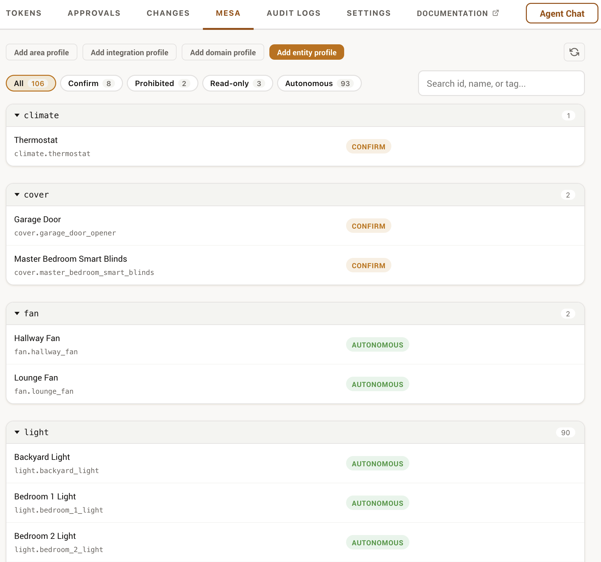
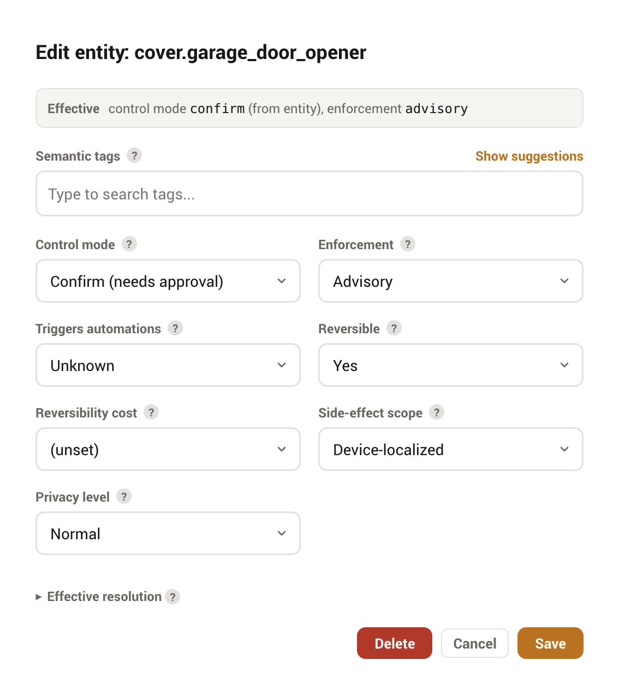
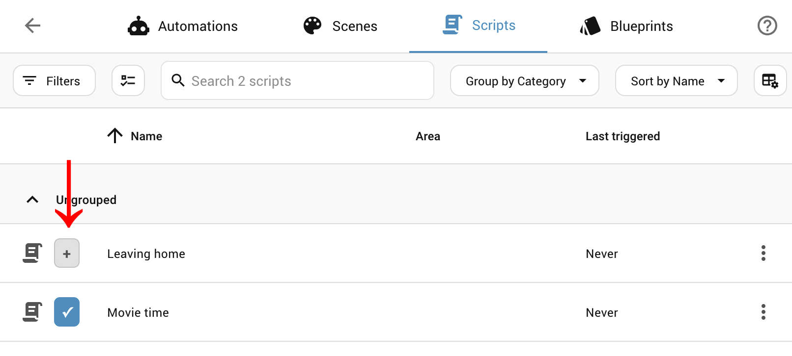

MESA
MESA is the third and last gate between an agent and your home. The permission tree decides which entities a token can touch and capabilities decide whether it can do the high-impact things at all; MESA decides, per entity, whether an action is safe by the entity's own nature, no matter what the token allows.
What MESA is
MESA is a library developed independently of Phoenix MCP. MESA (a semantic safety layer) attaches a small profile to an entity, a device, an area, an integration, a domain, or the whole deployment, describing how that entity should be treated: free to control, read-only, or in need of a human's confirmation. Phoenix MCP imports the mesa-core library and does not reimplement it; this page covers how MESA is wired into Phoenix MCP and how to use it. For the profile schema, the resolver, and the rest of the model, see the mesa-core repository.
Orthogonal to the token
MESA is per-entity nature policy, independent of the per-token tree. It applies to every token, including pass-through tokens, and to the native control tools, because it asks a different question: not "may this token act here" but "is acting on this entity safe at all".
Why a profile, not a flag
A permission says this token may not touch that entity. A semantic profile says something more durable: what the entity is. It records the entity's nature, the tags that describe its role, how private its data is, and how it should be operated, and Phoenix MCP derives the safe treatment from that. Describing your home this way, instead of as a pile of per-token allow and deny rules, pays off in several ways.
- Describe once, applies to everyone. A profile lives on the entity, the device, the area, the integration, or the domain, never on a token. Every agent you connect, scoped or pass-through, inherits the same treatment, so you never re-encode "the front door is dangerous" in each token's tree.
- Records why, not just allow or deny. A profile records why an entity is sensitive (an exterior lock, a camera that sees a bedroom, a child's room), so the right control mode follows from the nature and the decision is explainable rather than a bare flag.
- Safe by inheritance. Profiles cascade from deployment defaults to domain to integration to area to device to entity. Say "all locks need confirmation" once and every lock you add next year is covered, with no new rule to remember; risky domains start conservative out of the box. A device profile is the one that covers hardware rather than a list: it governs every entity a physical device owns, including the ones a firmware or integration update adds later.
- A shared vocabulary. Tags come from a canonical set, not free text, so profiles stay consistent and machine-checkable across the whole install instead of drifting into one-off notes.
- Tells the agent why. An entity's control mode and nature are surfaced to the AI before it acts, so a well-behaved agent asks for confirmation or backs off on its own, rather than failing into a wall and retrying.
- Checked against reality. Phoenix MCP validates profiles against the automations that reference your entities, flagging conflicts and orphaned declarations as your configuration changes; the Issues view surfaces stale or conflicting profiles for cleanup. A profile can also declare its own expiry conditions, and those are evaluated against the live deployment on every read: if an entity it depends on is gone, or the integration or Home Assistant version has moved past what it was authored against, it reports itself stale and names what changed.
Where MESA runs
Every service-call path resolves and flattens its target to explicit entity IDs, applies the token's capability gates, and only then hands the entity list to MESA. MESA never sees an entity Phoenix MCP has already denied; it has the final say on what survives. When MESA is off or no runtime is loaded, it reverts to allow-all and changes nothing.
MESA governs writes. Reads are scoped by the permission tree, not by MESA, so a read-only or confirm entity is still readable if the token can read it.
An entity's control mode
Each entity resolves to one effective control_mode, surfaced in describe_entity, search_entities, and find_available_actions so an agent can see it without trial and error.
| control_mode | What it means for a write |
|---|---|
| autonomous | The agent may control the entity directly, subject to the token and capabilities. |
| confirm | The action is held for a human. Under enforced mode it becomes a pending approval; under advisory mode it runs but the agent is told why it was risky. |
| read_only | Control is refused by the entity's nature. This holds even in advisory mode; read_only is a property of the entity, not a policy preference. |
| prohibited | Control is refused outright. |
Deployment mode
A single deployment setting, mesa_mode, decides how strict MESA is overall. It is set in the panel's Settings tab and reported by get_overview (which, when MESA is active, also lists the operator-set prohibited and read-only entities so an agent learns what is off-limits up front).
| mesa_mode | Effect |
|---|---|
| off | MESA is disabled entirely. Every entity is allow-all as far as MESA is concerned. |
| advisory default | MESA warns but does not block, and the warning is surfaced to the agent. The one exception is read_only, which always blocks because it is entity nature. |
| enforced | MESA blocks prohibited and read_only entities and routes every confirm entity through the admin approval gate. |
The default is advisory on purpose: MESA ships conservative baselines for inherently risky domains (locks and alarms start out prohibited), so enforced is opt-in rather than a surprise wall on day one. A profile can also carry its own enforcement_mode, so you can enforce specific entities, domains, or areas while the deployment stays advisory.
Confirm and the approval gate
A confirm entity under enforced mode produces the same kind of pending approval as a capability set to confirm: the action is saved, a notification is raised, and the in-panel Approvals queue holds it until an admin approves or rejects. On approval, MESA re-evaluates before the action runs, so an entity that became read-only or prohibited in the meantime is still refused. Under advisory mode nothing is held; the call proceeds and the agent receives an advisory note explaining the entity was marked confirm.
Using MESA in the panel
The MESA tab is where you author profiles. Profiles exist at six levels, listed below from most to least specific. MESA resolves each field across these levels rather than letting a single level win wholesale:
- Entity
- A profile for one entity_id. The most specific level.
- Device
- A profile for one physical device, covering every entity that device owns, including ones a firmware or integration update adds later. This is the level that describes hardware rather than a list: a lock, a multi-sensor, a power strip. More specific than an area, less specific than a single entity. Devices are picked by name, since a device id is an opaque registry value.
- Area
- A baseline for everything in an area.
- Integration
- A baseline for every entity a given integration created, keyed by its component name (for example, all
hueoryale_access_bluetoothentities, across whatever domains they span). More specific than a domain profile, less specific than an area or entity profile. Vendor-shipped sidecar profiles import at this level. - Domain
- A baseline for a whole domain (for example, all locks).
- Deployment defaults
- The fallback applied when nothing more specific matches.
Resolution is field by field, and for the safety-critical control_mode the most restrictive value wins, not the most specific: a less-specific prohibited or read_only is never loosened by a more-specific profile. The only exception is a deliberate operator override, which can relax an entity to autonomous only when it is set at the entity level and carries a written control_reason.
The editor enforces a few guardrails so a profile is always valid:
- Profile keys are drawn from the live registry, so you describe entities, domains, and areas that actually exist.
- The integration picker lists every integration that has actually created entities. That includes core and helper integrations such as
script,automation, andbackup(they create entities under a platform whose name equals their domain), which is expected, not a bug. Selecting one creates a valid profile for that integration's entities; for those domain-equal integrations it simply sits one level above the matching domain profile, so it is more specific for ordinary fields, subject to the most-restrictivecontrol_moderule above. - Tags come from a canonical vocabulary with autocomplete; free text is not accepted, and a profile holds up to six tags.
- Leaving an editor with unsaved changes prompts before discarding them.
An Issues view validates your profiles against the automations that reference them and lists orphaned declarations, so a profile that no longer matches anything is easy to spot. When orphans are present, a Clear all orphaned profiles button removes the ones whose entity, device, area, or integration no longer exists in one step (orphaned profiles are never deleted automatically). The full panel walkthrough is in the Panel guide.
The import and export buttons next to the tab's refresh control move your whole profile set as one JSON file: every stored profile across all six levels, in the standard MESA archive format, so it also works as a backup or transfers to any other MESA-aware server. Both actions confirm first. Importing validates every profile and reports anything invalid without writing it, and by default never touches a profile that already exists here; a Replace existing profiles checkbox switches the import to overwrite mode, behind a clearly destructive confirm, for restoring a backup over a drifted store. Profiles imported for entities that do not exist on this deployment surface in the orphan banner rather than failing.
The archive carries a format_version, and an export always writes the current one. Import accepts the current format and the one before it, so moving a profile set forward is always safe. Moving one backward is not: an older MESA-aware server refuses a newer archive outright rather than quietly dropping the parts it does not understand, which is the intended behaviour but means an export taken here cannot be read by a server running an older MESA. Upgrade the receiving side first.


Suggested profiles
Profiles only protect what you thought to describe. The Suggested profiles section at the top of the MESA tab closes the gap between what you profiled and what deserves one: Phoenix MCP scans your deployment and lists entities that look under-protected, each with a plain-English reason. Two kinds of finding:
- Blast radius
- An automation, script, or scene with no profile of its own whose actions reach risky devices (or fan out very widely). The suggestion targets the automation itself, because that is the only place a gate works: an automation's actions run natively inside Home Assistant and are never re-gated per entity, so a profile on the lock does not stop an agent from triggering the automation that unlocks it. A confirm profile on the automation gates the agent's trigger.
- Unprotected risky device
- A lock, alarm panel, garage-class cover, valve, siren, water heater, or firmware-update entity with no MESA coverage at any level. When five or more in one domain are uncovered, Phoenix MCP suggests a single domain-level profile instead of a wall of rows.
Each row offers Apply (create the profile with the suggested mode in one click; the reason is preserved on the profile as its control_reason), Review (open the editor pre-set to the suggested mode, to adjust before saving), and Dismiss (persisted, restorable). Locks and alarm panels suggest prohibited, matching the built-in baseline, so applying is never a loosening under enforced mode; everything else suggests confirm. Nothing is ever applied automatically, and domains your deployment defaults already restrict are not suggested.
The scan is a floor, not a guarantee
Blast radii come from the automation's declared targets. An automation that computes its targets from a template is invisible to this analysis, so an empty suggestion list does not mean nothing is risky. Suggestions catch the common cases; they do not replace reviewing what your automations can reach.
In-context profile buttons
Authoring profiles from the MESA tab means leaving whatever page you were on to look up an entity. The In-context profile buttons setting closes that gap. When you enable it, Phoenix MCP adds a small (+) control in two places. Per row, on Home Assistant's own configuration lists: the All Entities list and the Automations, Scripts, Scenes, Helpers, and People pages. And in the header of the device, area, and integration detail pages, where it profiles the whole device, area, or integration rather than one entity. Clicking it opens the same profile editor you would use in the MESA tab, with the target already filled in, so you can describe something the moment you notice it needs a profile. Because the target is pre-set, this also works for entities that are not in the registry and so cannot otherwise be selected. Domain profiles have no button, since Home Assistant has no per-domain page to put one on; author those in the MESA tab.
The setting lives under Settings · Experimental, is admin-only, and is off by default. It is a convenience for the admin's own browser and is independent of the kill switch; it never opens any agent-facing surface. It requires Home Assistant 2025.5.0 or newer (on older versions it simply adds nothing), and toggling it may need a full Home Assistant page reload to take effect.

It patches the Home Assistant frontend
These buttons are injected into pages Phoenix MCP does not own, so a Home Assistant update that reworks those pages can make them stop appearing until Phoenix MCP is updated with a fix. If that happens the feature self-disables on the layout it no longer recognises rather than breaking anything, so the failure is cosmetic, it's perfectly safe, and it never affects Home Assistant itself.
The MESA tools
An agent can read MESA profiles through four retrieval tools, all gated by Config read (profiles are configuration metadata, the same sensitivity class as get_config). They are token-scoped: the handlers and resolver only ever see entities the token can read, and every count, cursor, and fingerprint is relative to that scope, so there is no way to enumerate entities outside it. An out-of-scope or nonexistent entity returns the same "not found" envelope.
| Tool | Returns |
|---|---|
mesa_explain_profile | Why an entity resolved the way it did, field by field, including conflicts. |
mesa_get_caller_context | The MESA context for the current caller. |
mesa_get_profile | The stored and effective profile for one entity. Optionally also its "semantic moments": the purpose-specific triggers and conditions it participates in (Home Assistant 2026.7+). |
mesa_query_profiles | Profiles in scope, filterable and paginated. |
Two more tools, under the same gate, implement MESA's advisory lease protocol: mesa_request_lease announces "I am operating these entities for the next few seconds" (capped at 30) so MESA-aware components can coordinate, and mesa_release_lease ends the announcement early. A lease is a courtesy signal, not a lock, and grants nothing: every action stays gated by the permission tree, capabilities, and MESA. It covers only entities the token could already control, is denied for entities under protected or critical automation control, and lease endings fire an phoenix_mcp_mesa_lease_expired event you can automate on.
These appear in the Tools reference alongside the rest of the surface.
Scoped token plus MESA is the recommended pairing
The permission tree scopes what an agent sees, which keeps context cheap and reads secure; MESA governs the nature of writes on top. Pass-through and MESA explains why pass-through plus MESA, though possible, is usually not the better trade.